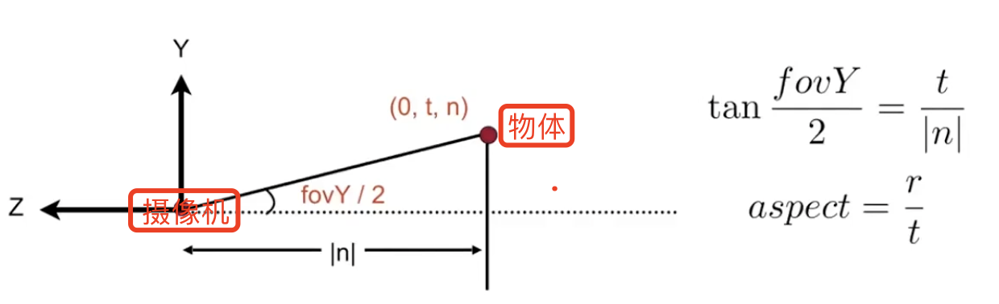
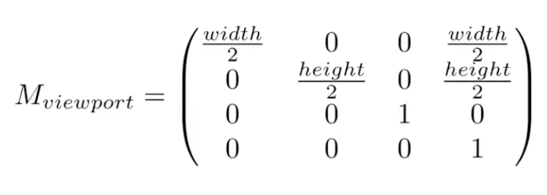

Games101笔记|光栅化和反走样
在“MVP变换矩阵推导”中首先进行了Model transformation, 也就是摆放好物体（对象）；然后就是View transformation摆放好相机（位置，拍摄方向，视场角等）；最后就是Projection transformation, 这里面包含有正交投影（Orthogtaphic projection）它是将长方体(cuboid)变换成canonical cube(正则、规范、标准正方体，长宽高都为1的正方体)，另一个是透视投影(Perspective Projection)它是将平头截面体（frustum）变换成标准正方体。
在变成了标准正方体之后我们之后做什么呢？回到我们之前拍照的例子上，我们的目的是将三维空间中的这些物体呈现在二维平面上。也就是说我们这一系列的变换最终是为了得到二维平面上的图像，所以我们变换做完之后紧接着的应该是考虑怎么把这个标准正方体变换到屏幕上。那屏幕到底又是什么呢？对于数字屏幕来说，屏幕是像素的集合，这个集合的长宽就决定了屏幕的分辨率。这里提到了像素Pixel, 它其实是picture element合成词。在屏幕上，像素就是一个带有颜色属性的小方块。这个颜色熟悉可以使用RGB三个通道来表示。对于像胶卷相机这样生成的模拟信号就没有像素的概念了。光栅化（raster）就是将图形画到屏幕的过程，首先定义屏幕空间。
0 回顾上节课的内容
上节课主要说了观测变换（其中包括了视图变换和投影变换）：
-
视图变换：利用摄像机和物体间的相对运动关系，始终把摄像机从一个任意的位置移动到一个经典的位置：在原点，看向 -z 轴，并且向上方向是 y 轴。
然后把其他所有的物体和这个相机一样的移动。这样就可以保证把模型变换应用在所有的模型上，把所有的视图变换也应用在所有的模型上。
在此之后，我们就知道所有的物体都是由一个标准的位置看过去，接下来就需要把物体投影成二维的照片。
-
投影变换（将三维物体投影到二维照片上）
- 正交投影：直接把深度信息忽略
- 透视投影：可以有近大远小的效果
上节课还讲了如何推导正交投影矩阵，以及透视投影如何通过先变换成正交投影，再投影过去。
观测变换完成后，我们最终得到的所有物体都会被变为在-1到1的三次方这个经典立方体里。
下一步是什么？（今天的学习内容）
将这些物体的照片画在屏幕上。如何画上去就是光栅化操作。
1 正交投影和透视投影之间的转换
透视投影转换成正交投影需要保证：
a. 近和远这两个平面都是不变的。
b. 近和远两个平面的大小都会变得和近平面一样大。
1）如何定义正交投影的三维空间中的长方体？
用它的 x 轴的覆盖，左和右；y 轴的覆盖，上和下；z 轴的覆盖，远和近。这 6 个来表示立方体。
2）如何定义透视投影的视锥？
正常情况下，如果我们要定义一个视锥的话，只需要：定义一个垂直的可视角度，以及定义一个宽高比。
- 宽高比：宽度/高度
- 垂直的可视角度：两条红线之间的夹角。（屏幕上下边中点与视点的连线的夹角）
3）可以将视锥中的这两个概念转换到之前定义的正交投影中的长方体中。
摄像机在原点，去看 -z 方向的物体。
摄像机离物体的距离是|n|，tan 角度是$ \frac{t}{|n|}$。
高度是 t，那么水平方向的宽度就应该是 t * 宽高比 = 宽度。

两者之间的概念是融会贯通的。
2 MVP 矩阵变换后要做什么呢？
要把在标准立方体里的三维物体画在二维屏幕上。
那么什么是屏幕呢？
- 一个二维的数组，数组里的每个元素都是一个像素点。
- 数组的大小，就是像素的多少，对应屏幕分辨率的大小。
- 一种典型的光栅成像设备。
什么是光栅、光栅化呢？
Raster在德语中的意思就是屏幕。
Rasterize光栅化被定义为：将东西画在屏幕上。
什么是像素？
- Pixel （picture element 的缩写）
- 现在我们把它理解为一个个小的方块，每个方块里的颜色都是统一不变的，纯白或者纯红纯黑。也就是说像素就是最小的颜色单位了，在这个里面不会有任何的变化。（当然这是不对的，只是目前这样理解，之后会详细解释。）
- 一个像素可以表示不同的颜色。它表示一个灰度，也就是从黑到白，可以划分成若干等级，256 个等级（0~255）0 表示它完全是黑的，255 表示它完全是白的。同时我们也可以用三个数字来表示红色、绿色、蓝色的等级，组合在一起就可以形成不同的颜色。因此一个像素可以通过 RGB 来表示。
第一步：-1 到 1 的三次方的立方体到屏幕的转换。
-
将[-1, 1]^2^ 转换成 [0, width] x [0, height]这个空间中去。
-
视口变换矩阵：
 -
==如何处理 z 方向上的值呢？==
第二步：将一个个的三角形光栅化为不同的像素点
不同的光栅显示设备：
- ① 示波器。多用于物理实验，显示绿色的不同曲线。
- 成像原理：阴极射线管 CRT（很多的电子，被加速后，穿过电场/磁场令电子束产生偏向，打在屏幕上。）
- 如何在电视上成像？从左到右，从上到下的画线，覆盖整个屏幕。隔行扫描（可了解下）
- ② 🔺对于现在的电脑显示器，只需要知道它们的显示原理就行。给我一个显示器，如何知道它们会显示什么？
- 通过显卡中内存里的一块区域。（显卡里的内存，为显存）将显存中的某一块区域映射到屏幕上，就是现在的屏幕的显示方式。
- 我们可以生成不同的图像，存在显存中的不同区域，然后告诉显示器应该显示哪一幅图。
- ③ 现在的主要显示设备：平板显示设备 LCD。
- 之前用的计算器屏幕就是一个超级低分辨率的LCD 显示设备，都可以看出一个个的像素点；现在的手机屏幕是一个非常高分辨率的显示器（LCD，OLED）；现在还有超出视网膜分辨率的显示设备，被称之为视网膜屏幕。
- LCD 液晶显示器工作原理：通过液晶的原理来控制一个像素到底显示什么。液晶会通过不同的排布来影响光的极化，也就是光的偏振方向。
- ④ LED 发光二极管。要么发光要么不发光。
- ⑤ kindle墨水屏，显示原理：有黑色和白色的墨水，通过不同的电压，可以使墨水发生翻转，也就是可以控制是黑色还是白色在上面，但是刷新率比较低，但看起来较自然。
1、为什么是三角形？
- 是最基础的多边形
- 任何其他的多边形都可被拆成三角形
- 独特的性质
- 三角形内部一定是平面
- 点在三角形的内部还是外部，可以很好的被定义
- 只要定义三角形顶点的不同属性，是可以在三角形内做一个渐变的效果。（做插值）
2、如何将一个三角形变成屏幕上的一个个像素点呢？
已知：经过 MVP 变换以及视口变换后，就可以知道每个三角形在屏幕上的位置坐标。
1️⃣ 判断屏幕上的像素点在这个三角形的里面还是外面。
首先需要判断屏幕上的像素和三角形的位置关系。更确切地说是判断像素的中心点和这个三角形的位置关系。
一个最简单的做光栅化的方法：采样。
什么是采样呢？
采样其实就是将一个函数离散化的过程。也可以理解为：给你一个连续的函数，然后计算不同的 x 所对应的函数值 y 是多少。
利用像素的中心，对屏幕空间进行采样。判断这个像素的中心点是不是在三角形内。在就是 1，不在就是 0。将最终的结果记录进对应的像素点信息中。
1、如何判断像素的中心点是不是在三角形内呢？
利用向量的叉乘来判断。（看补充与回顾中向量的叉乘）
2、如果遇到一个点就在三角形的边界上如何处理？
可以自己来严格定义或者宽松处理。本课程中就认为在边上就当做在三角形内部处理。
优化处理：
那每判断一个三角形中的像素点都需要遍历屏幕上所有的像素点吗？当然没有必要，此时会用到一个叫做**包围盒(AABB)**的概念。
-
加速方法一：一个三角形其实只会覆盖一个较小的区域，其他的屏幕区域像素点无需遍历，覆盖不到。那么就可以求得三个顶点中的最大和最小坐标，得到一个三角形所在的长方形面积，只用遍历这个长方形中的像素点就可以了。
-
加速方法二：对于三角形所覆盖的区域，每一行都找它所对应的最左和最右，这样的话连一个像素都不会多考虑，相当于每一行都有一个包围盒的概念。
2️⃣ 如果像素点在三角形内，那么就在对应的像素点涂上相应的三角形颜色。
这样，一个大概的三角形轮廓就被画在了屏幕上。
但是相应的三角形像素点被填充后，边缘会出现不光滑的锯齿现象，这种现象被称为“走样”。那么此时需要用到反走样技术。
1 反走样 Antialiasing
1.1 采样的理论
采样不止可以发生在不同的位置，还可以发生在不同的时间。
我们把一系列的图按照一定的时间放出来，就可以形成一系列的动画。这个动画就可以称为在时间中进行的采样。因为我们其实没有见过连续意义上的动画，我们看到的是所谓很连贯的视频。视频是由一帧一帧的图来组成的，一秒内依次放出 24 帧图像，让大家视觉上会认为是个连续的过程。但是其实它在每个时间点上都是离散的一幅幅图。
Sampling Artifacts：Errors / Mistakes / Inaccuracies in Computer Graphics.
采样会产生不同的问题：
- 锯齿现象
- 摩尔纹 (Moire Patterns) 平时拿手机去拍屏幕，也会看到一些扭曲的纹路。
- 车轮错觉 (Wagon Wheel illusion) 车轮在高速运动的时候，人们会看到车轮在倒着转的错觉（解释）。因为人眼在时间中的采样跟不上轮子运动的速度，就会出现这样的现象。
产生以上问题的本质在于：信号变化的速度太快了，但是采样的速度太慢了，跟不上信号变化的速度。
反走样的理念：采样之前做个模糊操作（滤波）
采样前做个模糊操作，采样的呢就是个模糊的三角形，该什么颜色对应像素就是什么颜色。解决效果还不错。
但是为什么呢？
① 为什么采样的速度跟不上信号变化的速度就会产生走样现象？
② 为什么需要在采样之前做模糊操作？先采样后做模糊操作出来的效果就不行呢？
接下来就需要用到频域方面的知识了。
频域
傅里叶变换
傅里叶级数展开：任何一个周期函数，都可以把它写成一系列正弦和余弦函数的线性组合，以及一个常数项。（下图中的f(x)式子）
傅里叶级数展开可以描述很多不同的正弦余弦项的和。**通过傅里叶级数展开我们可以知道：任何不同的函数都可以分解成不同的频率。**（通过下图的右边 4 幅图就可以看出：加入的函数频率越来越高，最终的近似效果也越来越好。也意味着这个最终的图像也可以分解为这么不同的频率。）
我们给定一个函数，可以让它经过相当相当复杂的操作，变成另外一个函数。并且可以通过逆变换把它变回原来的函数。这就是傅里叶变换和傅里叶的逆变换。
傅里叶变换就是把函数给变成不同的频率的段，并且我们把这些不同频率的段给显示出来。通过傅里叶变换，我们就可以用来分析函数有着什么样的频率。
下图的五个函数有着不同的频率，从低到高，从上到下。我们用完全相同的采样方法对这些函数进行一次采样。
**得出的最终结论是：**更高频率的函数需要更密的采样。
通过频率来分析走样是怎么回事儿
用同样的采样方法采样两种频率完全不同的函数，得出的结果却是完全一致，无法区分它们，这样的现象就叫做“走样”。
滤波 = 去除某些频率内容 = 卷积（=平均）
傅里叶变换可以把函数从时域变到频域，如下图所示。
卷积：在周围的区域做一个平均。
时域上，如果想对两个信号进行卷积。其实对应到两个信号各自的频域上，是两个信号的频域的乘积。所以卷积操作和乘积操作是挺接近的。
**卷积定理:**函数的卷积的傅里叶变换是函数傅里叶变换的乘积。卷积定理揭示了时间域与频率域的对应关系。
- 时域卷积定理：时域内的卷积对于频域内的乘积
- 两信号在时域的卷积积分 = 在频域中该两信号的傅里叶变换的乘积
- 频域卷积定理：频域内的卷积对应时域内的乘积
- 两信号在时域的乘积 = 这两个信号傅里叶变换的卷积除以 2π
通过卷积定理，我们就知道如何做一个卷积：
- 可以直接拿到一幅图，直接用卷积的滤波器去做一个卷积操作。
- 也可以把这张图
- 先做一个傅里叶变换，变到频域上；
- 后把卷积的滤波器也变到频域上；
- 两者相乘，得到频域的结果；
- 然后再将结果傅里叶逆变换为时域上。
采样 = 重复频率内容
假如说我要采样第一个函数a，那就是需要把这个函数变成一系列离散的点，只留下在某些位置上函数的值。这就好像在这个函数上乘以另外一个函数，比如第二个函数c，它只在某些地方上有值，其他地方值为 0。最终相乘的结果就是第三个函数e。
如何做采样呢？
给一个原始的信号，去乘上第二个这样的函数，就可以得到第三个函数，就是采样的结果。
这是在时域上，如果在频域上呢？已知时域上的乘积对应的就是频域上的卷积。
那么就是b卷积d 得到的结果为 f。
从f 图可以总结出：采样是什么？采样就是在重复原始信号的频谱。
我们就可以理解了“为什么会产生走样现象”这个问题：
因为采样不同的间隔会引起频谱以另外一个不同的间隔移动。走样在频域的角度上来说，就是频谱在搬移的情况下发生了混叠。如下图所示：
1.2 实际的图形学中如何做反走样
方法一：增加采样率
这是一个终极解决方法。但是代价昂贵且可能需要非常高分辨率。
方法二：反走样
先模糊，后采样。也就是先把原始的高频信号拿掉，后采样。原理如下：
模糊操作
那我们如何进行滤波操作？也就是如何进行模糊处理呢？
先模糊操作，也就是卷积操作，求个平均。
我们期望做到的：通过计算平均像素值进行抗锯齿。在栅格化一个三角形时，函数f(x，y) = inside(triangle，x，y) 的像素区域内的平均值等于该三角形覆盖的像素的面积。
MSAA
用更多的采样点来反走样。MSAA是上述期望做法的一种近似操作。毕竟算出三角形覆盖每一个像素的面积大小是需要很大计算量的。
MSAA 的思想：认为一个像素内被划分为好多小的像素。假设被划分为 4 x 4 = 16个小像素。每个小的像素假设有个中心，然后判断这些点是否在三角形内，将最终得到的结果平均起来。这个平均后的结果就可被看做三角形对这个像素点覆盖区域的近似。
MSAA 做的是模糊操作。它绝不是靠提升频率分辨率来增加效果，只是靠增加采样点来更好地近似三角形的覆盖率而已。
MSAA 为增加效果付出的代价？
增加了计算量。一个像素被划分为 4 x 4，那么就是多了 16 倍的计算量。
为了解决这个弊端，后续人们会用更加有效的图案来分布采样点，而且这些采样点有的还会被邻近的复用。
采样操作
采样就很简单，此时一整个像素格子就是一个颜色，直接采样在模糊操作完之后的像素点中心取这个颜色就好。
小结：
1、很重要的另外两种抗锯齿方法
- FXAA 快速近似抗锯齿。和增加样本数没有任何关系，它是一个图像的后期处理。原理：通过图像匹配的方式找到有锯齿的地方，然后把这些有锯齿的边界给替换成平滑的边界。
- TAA 简单高效，与时间相关。原理是复用上一帧的信息。
2、超分辨率/超采样
- 从低分辨率到高分辨率。把小图变成大图，又不想看到锯齿现象。
- 基本上还是“样本不足”的问题
- DLSS（深度学习超级采样）
- 原文作者：Binean
- 原文链接：https://bzhou830.github.io/post/20200216Games101_03/
- 版权声明：本作品采用知识共享署名-非商业性使用-禁止演绎 4.0 国际许可协议进行许可，非商业转载请注明出处（作者，原文链接），商业转载请联系作者获得授权。